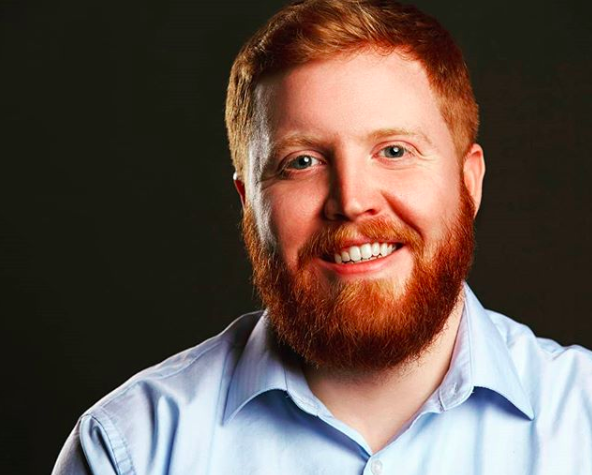

About Me

Hello! My name is Rich Coleman and I currently live in Chicago, Illinois, working as an Ad Ops Manager at Upshot Agency. I've been working in the Ad Ops field since 2015 and find the technology behind digital advertising quite fascinating! Because of this I also enjoy freelancing for smaller agencies to help them with their technical needs. Whether it be figuring out the best way to tag a client's site or establishing best practices for digital ad trafficking and ad server management, educating and executing is a thrill!
I'm originally from Philadelphia, PA, and graduated in 2010 from The Pennsylvania State University with a Bachelor's in Journalism. My Journalism degree had me living in Las Vegas, NV, as a crime reporter for the Las Vegas Sun newspaper, followed by some shorter reporting stints in Altoona and Philadelphia. I recently decided to go back to school in August 2018 for a Full Stack Coding Bootcamp at Northwestern University. When I'm not working, you can find me at the iO Theater performing with the improv team '66 Mustang!
Please feel free to contact me! Whether it be related to ad ops, coding, improv, or Philly sports, drop me a line!